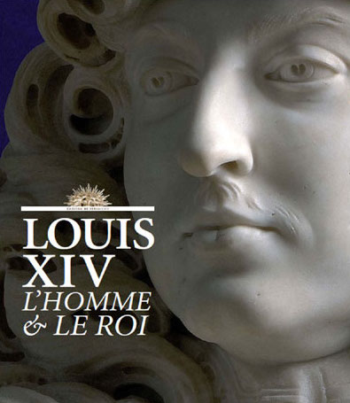

Louis XIV, l’homme et le roi
Po raz pierwszy w historii Ludwikowi XIV, Królowi-Słońce, poświęcono dużą wystawę, ukazującą jego osobowość oraz indywidualny gust artystyczny.
Prezentowana w pałacowych wnętrzach Wersalu ekspozycja „Louis XIV, l’homme et le roi” zgromadziła ponad 300 niezwykłych dzieł sztuki, pochodzących z kolekcji całego świata. Malowidła, rzeźby, objets d’art oraz meble, z których część nie była pokazywana we Francji od czasów Ancien régime, ukazują postać słynnego monarchy w nowym świetle — poprzez jego indywidualny smak artystyczny oraz publiczny wizerunek.
Bogactwo owego wizerunku Ludwika XIV pozostaje w historii bez precedensu — jest Królem-Słońce, zatem Apollinem, bogiem słońca. Obraz ten, kształtowany przez samego króla i jego ministrów, tworzony dla potomności, stale ewoluował, by ukazywać emblematyczne figury królewskiej potęgi: król wojny na czele swych oddziałów, patron i opiekun sztuk, obrońca Kościoła, król chwały. Owa widzialna chwała, której nadano mityczne wręcz proporcje, przybrała swój kształt dzięki kunsztowi artystów, jak Bernini, Girardon, Rigaud, Cucci, Gole, Van der Meulen oraz Coysevox, których prace wysublimowały królewski portret, jaki możemy podziwiać podczas prezentowanej wystawy.
Król postrzegał sam siebie jako mecenasa artystów oraz kolekcjonera dzieł sztuki, rywalizując w tej mierze z innymi monarchami Europy. Czerpiąc z przykładu Mazarina, Ludwik XIV kształtował swój gust w bezpośrednim kontakcie z artystami, z którymi nawiązał osobiste stosunki: Le Brunem i Mignardem na polu malarstwa, Le Vau i Hardouin-Mansartem w dziedzinie architektury, Le Nôtrem przy kształtowaniu ogrodów, Lullym w świecie muzyki oraz Molièrem na deskach teatru. Zgromadzone przez monarchę dzieła sztuki, klejnoty, kamee, medaliony, miniatury, jak również obrazy i rzeźby, którymi lubił się otaczać w swych apartamentach w Wersalu, odzwierciedlają portret namiętnego miłośnika sztuki oraz człowieka o wysublimowanym guście artystycznym.